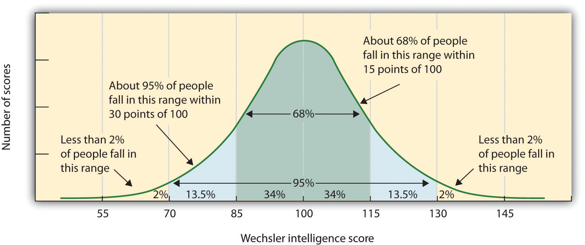
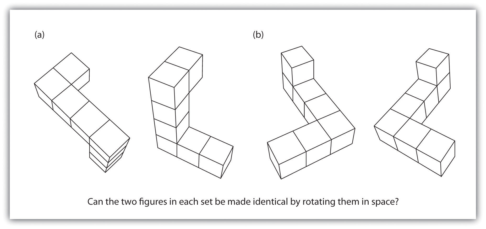

In January 2005, the president of Harvard University, Lawrence H. Summers, sparked an uproar during a presentation at an economic conference on women and minorities in the science and engineering workforce. During his talk, Summers proposed three reasons why there are so few women who have careers in math, physics, chemistry, and biology. One explanation was that it might be due to discrimination against women in these fields, and a second was that it might be a result of women’s preference for raising families rather than for competing in academia. But Summers also argued that women might be less genetically capable of performing science and mathematics—that they may have less “intrinsic aptitude” than do men.
Summers’s comments on genetics set off a flurry of responses. One of the conference participants, a biologist at the Massachusetts Institute of Technology, walked out on the talk, and other participants said that they were deeply offended. Summers replied that he was only putting forward hypotheses based on the scholarly work assembled for the conference, and that research has shown that genetics have been found to be very important in many domains, compared with environmental factors. As an example, he mentioned the psychological disorder of autism, which was once believed to be a result of parenting but is now known to be primarily genetic in origin.
The controversy did not stop with the conference. Many Harvard faculty members were appalled that a prominent person could even consider the possibility that mathematical skills were determined by genetics, and the controversy and protests that followed the speech led to first ever faculty vote for a motion expressing a “lack of confidence” in a Harvard president. Summers resigned his position, in large part as a result of the controversy, in 2006 (Goldin, Goldin, & Foulkes, 2005).Goldin, G., Goldin, R., & Foulkes, A. (2005, February 21). How Summers offended: Harvard president’s comments underscored the gender bias we’ve experienced. The Washington Post, p. A27. Retrieved from http://www.washingtonpost.com/wp-dyn/articles/A40693-2005Feb20.html
The characteristic that is most defining of human beings as a species is that our large cerebral cortexes make us very, very smart. In this chapter we consider how psychologists conceptualize and measure human intelligenceThe ability to think, to learn from experience, to solve problems, and to adapt to new situations.—the ability to think, to learn from experience, to solve problems, and to adapt to new situations. We’ll consider whether intelligence involves a single ability or many different abilities, how we measure intelligence, what intelligence predicts, and how cultures and societies think about it. We’ll also consider intelligence in terms of nature versus nurture and in terms of similarities versus differences among people.
Intelligence is important because it has an impact on many human behaviors. Intelligence is more strongly related than any other individual difference variable to successful educational, occupational, economic, and social outcomes. Scores on intelligence tests predict academic and military performance, as well as success in a wide variety of jobs (Ones, Viswesvaran, & Dilchert, 2005; Schmidt & Hunter, 1998).Ones, D. S., Viswesvaran, C., & Dilchert, S. (2005). Cognitive ability in selection decisions. In O. Wilhelm & R. W. Engle (Eds.), Handbook of understanding and measuring intelligence (pp. 431–468). Thousand Oaks, CA: Sage; Schmidt, F., & Hunter, J. (1998). The validity and utility of selection methods in personnel psychology: Practical and theoretical implications of 85 years of research findings. Psychological Bulletin, 124(2), 262–274. Intelligence is also negatively correlated with criminal behaviors—the average intelligence quotient (IQ) of delinquent adolescents is about 7 points lower than that of other adolescents (Wilson & Herrnstein, 1985)Wilson, J. Q., & Herrnstein, R. J. (1985). Crime and human nature. New York, NY: Simon & Schuster.—and positively correlated with health-related outcomes, including longevity (Gottfredson, 2004; Gottfredson & Deary, 2004).Gottfredson, L. S. (2004). Life, death, and intelligence. Journal of Cognitive Education and Psychology, 4(1), 23–46; Gottfredson, L. S., & Deary, I. J. (2004). Intelligence predicts health and longevity, but why? Current Directions in Psychological Science, 13(1), 1–4. At least some of this latter relationship may be due to the fact that people who are more intelligent are better able to predict and avoid accidents and to understand and follow instructions from doctors or on drug labels. Simonton (2006)Simonton, D. K. (2006). Presidential IQ, openness, intellectual brilliance, and leadership: Estimates and correlations for 42 U.S. chief executives. Political Psychology, 27(4), 511–526. also found that among U.S. presidents, the ability to effectively lead was well predicted by ratings of the president’s intelligence.
The advantages of having a higher IQ increase as life settings become more complex. The correlation between IQ and job performance is higher in more mentally demanding occupations, such as physician or lawyer, than in less mentally demanding occupations, like clerk or newspaper delivery person (Salgado et al., 2003).Salgado, J. F., Anderson, N., Moscoso, S., Bertua, C., de Fruyt, F., & Rolland, J. P. (2003). A meta-analytic study of general mental ability validity for different occupations in the European Community. Journal of Applied Psychology, 88(6), 1068–1081. Although some specific personality traits, talents, and physical abilities are important for success in some jobs, intelligence predicts performance across all types of jobs.
Our vast intelligence also allows us to have languageA system of communication that uses symbols in a regular way to create meaning., a system of communication that uses symbols in a regular way to create meaning. Language gives us the ability communicate our intelligence to others by talking, reading, and writing. As the psychologist Steven Pinker put it, language is the “the jewel in the crown of cognition” (Pinker, 1994).Pinker, S. (1994). The language instinct (1st ed.). New York, NY: William Morrow. Although other species have at least some ability to communicate, none of them have language. In the last section of this chapter we will consider the structure and development of language, as well as its vital importance to human beings.
Psychologists have long debated how to best conceptualize and measure intelligence (Sternberg, 2003).Sternberg, R. J. (2003). Contemporary theories of intelligence. In W. M. Reynolds & G. E. Miller (Eds.), Handbook of psychology: Educational psychology (Vol. 7, pp. 23–45). Hoboken, NJ: John Wiley & Sons. These questions include how many types of intelligence there are, the role of nature versus nurture in intelligence, how intelligence is represented in the brain, and the meaning of group differences in intelligence.
In the early 1900s, the French psychologist Alfred Binet (1857–1914) and his colleague Henri Simon (1872–1961) began working in Paris to develop a measure that would differentiate students who were expected to be better learners from students who were expected to be slower learners. The goal was to help teachers better educate these two groups of students. Binet and Simon developed what most psychologists today regard as the first intelligence test, which consisted of a wide variety of questions that included the ability to name objects, define words, draw pictures, complete sentences, compare items, and construct sentences.
Binet and Simon (Binet, Simon, & Town, 1915; Siegler, 1992)Binet, A., Simon, T., & Town, C. H. (1915). A method of measuring the development of the intelligence of young children (3rd ed.) Chicago, IL: Chicago Medical Book; Siegler, R. S. (1992). The other Alfred Binet. Developmental Psychology, 28(2), 179–190. believed that the questions they asked their students, even though they were on the surface dissimilar, all assessed the basic abilities to understand, reason, and make judgments. And it turned out that the correlations among these different types of measures were in fact all positive; students who got one item correct were more likely to also get other items correct, even though the questions themselves were very different.
On the basis of these results, the psychologist Charles Spearman (1863–1945) hypothesized that there must be a single underlying construct that all of these items measure. He called the construct that the different abilities and skills measured on intelligence tests have in common the general intelligence factor (g)The construct that the different abilities and skills measured on intelligence tests have in common.. Virtually all psychologists now believe that there is a generalized intelligence factor, g, that relates to abstract thinking and that includes the abilities to acquire knowledge, to reason abstractly, to adapt to novel situations, and to benefit from instruction and experience (Gottfredson, 1997; Sternberg, 2003).Gottfredson, L. S. (1997). Mainstream science on intelligence: An editorial with 52 signatories, history and bibliography. Intelligence, 24(1), 13–23; Sternberg, R. J. (2003). Contemporary theories of intelligence. In W. M. Reynolds & G. E. Miller (Eds.), Handbook of psychology: Educational psychology (Vol. 7, pp. 23–45). Hoboken, NJ: John Wiley & Sons. People with higher general intelligence learn faster.
Soon after Binet and Simon introduced their test, the American psychologist Lewis Terman (1877–1956) developed an American version of Binet’s test that became known as the Stanford-Binet Intelligence Test. The Stanford-Binet is a measure of general intelligence made up of a wide variety of tasks including vocabulary, memory for pictures, naming of familiar objects, repeating sentences, and following commands.
Although there is general agreement among psychologists that g exists, there is also evidence for specific intelligence (s)A measure of a specific skill in a narrow domain., a measure of specific skills in narrow domains. One empirical result in support of the idea of s comes from intelligence tests themselves. Although the different types of questions do correlate with each other, some items correlate more highly with each other than do other items; they form clusters or clumps of intelligences.
One distinction is between fluid intelligence, which refers to the capacity to learn new ways of solving problems and performing activities, and crystallized intelligence, which refers to the accumulated knowledge of the world we have acquired throughout our lives (Salthouse, 2004).Salthouse, T. A. (2004). What and when of cognitive aging. Current Directions in Psychological Science, 13(4), 140–144. These intelligences must be different because crystallized intelligence increases with age—older adults are as good as or better than young people in solving crossword puzzles—whereas fluid intelligence tends to decrease with age (Horn, Donaldson, & Engstrom, 1981; Salthouse, 2004).Horn, J. L., Donaldson, G., & Engstrom, R. (1981). Apprehension, memory, and fluid intelligence decline in adulthood. Research on Aging, 3(1), 33–84; Salthouse, T. A. (2004). What and when of cognitive aging. Current Directions in Psychological Science, 13(4), 140–144.
Other researchers have proposed even more types of intelligences. L. L. Thurstone (1938)Thurstone, L. L. (1938). Primary mental abilities. Psychometric Monographs, No. 1. Chicago, IL: University of Chicago Press. proposed that there were seven clusters of primary mental abilities, made up of word fluency, verbal comprehension, spatial ability, perceptual speed, numerical ability, inductive reasoning, and memory. But even these dimensions tend to be at least somewhat correlated, showing again the importance of g.
One advocate of the idea of multiple intelligences is the psychologist Robert Sternberg. Sternberg has proposed a triarchic (three-part) theory of intelligenceA theory proposed by Robert Sternberg that suggests that people may display more or less analytical intelligence, creative intelligence, and practical intelligence. that proposes that people may display more or less analytical intelligence, creative intelligence, and practical intelligence. Sternberg (1985, 2003)Sternberg, R. J. (1985). Beyond IQ: A triarchic theory of human intelligence. New York, NY: Cambridge University Press; Sternberg, R. J. (2003). Our research program validating the triarchic theory of successful intelligence: Reply to Gottfredson. Intelligence, 31(4), 399–413. argued that traditional intelligence tests assess analytical intelligence, the ability to answer problems with a single right answer, but that they do not well assess creativity (the ability to adapt to new situations and create new ideas) or practicality (e.g., the ability to write good memos or to effectively delegate responsibility).
As Sternberg proposed, research has found that creativity is not highly correlated with analytical intelligence (Furnham & Bachtiar, 2008),Furnham, A., & Bachtiar, V. (2008). Personality and intelligence as predictors of creativity. Personality and Individual Differences, 45(7), 613–617. and exceptionally creative scientists, artists, mathematicians, and engineers do not score higher on intelligence than do their less creative peers (Simonton, 2000).Simonton, D. K. (2000). Creativity: Cognitive, personal, developmental, and social aspects. American Psychologist, 55(1), 151–158. Furthermore, the brain areas that are associated with convergent thinking, thinking that is directed toward finding the correct answer to a given problem, are different from those associated with divergent thinking, the ability to generate many different ideas for or solutions to a single problem (Tarasova, Volf, & Razoumnikova, 2010).Tarasova, I. V., Volf, N. V., & Razoumnikova, O. M. (2010). Parameters of cortical interactions in subjects with high and low levels of verbal creativity. Human Physiology, 36(1), 80–85. On the other hand, being creative often takes some of the basic abilities measured by g, including the abilities to learn from experience, to remember information, and to think abstractly (Bink & Marsh, 2000).Bink, M. L., & Marsh, R. L. (2000). Cognitive regularities in creative activity. Review of General Psychology, 4(1), 59–78.
Studies of creative people suggest at least five components that are likely to be important for creativity:
The last aspect of the triarchic model, practical intelligence, refers primarily to intelligence that cannot be gained from books or formal learning. Practical intelligence represents a type of “street smarts” or “common sense” that is learned from life experiences. Although a number of tests have been devised to measure practical intelligence (Sternberg, Wagner, & Okagaki, 1993; Wagner & Sternberg, 1985),Sternberg, R. J., Wagner, R. K., & Okagaki, L. (1993). Practical intelligence: The nature and role of tacit knowledge in work and at school. In J. M. Puckett & H. W. Reese (Eds.), Mechanisms of everyday cognition (pp. 205–227). Hillsdale, NJ: Lawrence Erlbaum Associates; Wagner, R., & Sternberg, R. (1985). Practical intelligence in real-world pursuits: The role of tacit knowledge. Journal of Personality and Social Psychology, 49(2), 436–458. research has not found much evidence that practical intelligence is distinct from g or that it is predictive of success at any particular tasks (Gottfredson, 2003).Gottfredson, L. S. (2003). Dissecting practical intelligence theory: Its claims and evidence. Intelligence, 31(4), 343–397. Practical intelligence may include, at least in part, certain abilities that help people perform well at specific jobs, and these abilities may not always be highly correlated with general intelligence (Sternberg, Wagner, & Okagaki, 1993).Sternberg, R. J., Wagner, R. K., & Okagaki, L. (1993). Practical intelligence: The nature and role of tacit knowledge in work and at school. In J. M. Puckett & H. W. Reese (Eds.), Mechanisms of everyday cognition (pp. 205–227). Hillsdale, NJ: Lawrence Erlbaum Associates. On the other hand, these abilities or skills are very specific to particular occupations and thus do not seem to represent the broader idea of intelligence.
Another champion of the idea of multiple intelligences is the psychologist Howard Gardner (1983, 1999).Gardner, H. (1983). Frames of mind: The theory of multiple intelligences. New York, NY: Basic Books; Gardner, H. (1999). Intelligence reframed: Multiple intelligences for the 21st century. New York, NY: Basic Books. Gardner argued that it would be evolutionarily functional for different people to have different talents and skills, and proposed that there are eight intelligences that can be differentiated from each other (Table 9.1 "Howard Gardner’s Eight Specific Intelligences"). Gardner noted that some evidence for multiple intelligences comes from the abilities of autistic savants, people who score low on intelligence tests overall but who nevertheless may have exceptional skills in a given domain, such as math, music, art, or in being able to recite statistics in a given sport (Treffert & Wallace, 2004).Treffert, D. A., & Wallace, G. L. (2004, January 1). Islands of genius. Scientific American, 14–23. Retrieved from http://gordonresearch.com/articles_autism/SciAm-Islands_of_Genius.pdf
Table 9.1 Howard Gardner’s Eight Specific Intelligences
| Intelligence | Description |
|---|---|
| Linguistic | The ability to speak and write well |
| Logico-mathematical | The ability to use logic and mathematical skills to solve problems |
| Spatial | The ability to think and reason about objects in three dimensions |
| Musical | The ability to perform and enjoy music |
| Kinesthetic (body) | The ability to move the body in sports, dance, or other physical activities |
| Interpersonal | The ability to understand and interact effectively with others |
| Intrapersonal | The ability to have insight into the self |
| Naturalistic | The ability to recognize, identify, and understand animals, plants, and other living things |
Source: Adapted from Gardner, H. (1999). Intelligence reframed: Multiple intelligences for the 21st century. New York, NY: Basic Books.
The idea of multiple intelligences has been influential in the field of education, and teachers have used these ideas to try to teach differently to different students. For instance, to teach math problems to students who have particularly good kinesthetic intelligence, a teacher might encourage the students to move their bodies or hands according to the numbers. On the other hand, some have argued that these “intelligences” sometimes seem more like “abilities” or “talents” rather than real intelligence. And there is no clear conclusion about how many intelligences there are. Are sense of humor, artistic skills, dramatic skills, and so forth also separate intelligences? Furthermore, and again demonstrating the underlying power of a single intelligence, the many different intelligences are in fact correlated and thus represent, in part, g (Brody, 2003).Brody, N. (2003). Construct validation of the Sternberg Triarchic abilities test: Comment and reanalysis. Intelligence, 31(4), 319–329.
The goal of most intelligence tests is to measure g, the general intelligence factor. Good intelligence tests are reliable, meaning that they are consistent over time, and also demonstrate construct validity, meaning that they actually measure intelligence rather than something else. Because intelligence is such an important individual difference dimension, psychologists have invested substantial effort in creating and improving measures of intelligence, and these tests are now the most accurate of all psychological tests. In fact, the ability to accurately assess intelligence is one of the most important contributions of psychology to everyday public life.
Intelligence changes with age. A 3-year-old who could accurately multiply 183 by 39 would certainly be intelligent, but a 25-year-old who could not do so would be seen as unintelligent. Thus understanding intelligence requires that we know the norms or standards in a given population of people at a given age. The standardizationAdministering a test to a large number of people at different ages and computing the average score on the test at each age level. of a test involves giving it to a large number of people at different ages and computing the average score on the test at each age level.
It is important that intelligence tests be standardized on a regular basis, because the overall level of intelligence in a population may change over time. The Flynn effectThe observation that scores on intelligence tests worldwide have increased substantially over the past decades. refers to the observation that scores on intelligence tests worldwide have increased substantially over the past decades (Flynn, 1999).Flynn, J. R. (1999). Searching for justice: The discovery of IQ gains over time. American Psychologist, 54(1), 5–20. Although the increase varies somewhat from country to country, the average increase is about 3 IQ points every 10 years. There are many explanations for the Flynn effect, including better nutrition, increased access to information, and more familiarity with multiple-choice tests (Neisser, 1998).Neisser, U. (Ed.). (1998). The rising curve. Washington, DC: American Psychological Association. But whether people are actually getting smarter is debatable (Neisser, 1997).Neisser, U. (1997). Rising scores on intelligence tests. American Scientist, 85, 440–447.
Once the standardization has been accomplished, we have a picture of the average abilities of people at different ages and can calculate a person’s mental ageThe age at which a person is performing intellectually., which is the age at which a person is performing intellectually. If we compare the mental age of a person to the person’s chronological age, the result is the intelligence quotient (IQ)A measure of intelligence that is adjusted for age., a measure of intelligence that is adjusted for age. A simple way to calculate IQ is by using the following formula:
IQ = mental age ÷ chronological age × 100.Thus a 10-year-old child who does as well as the average 10-year-old child has an IQ of 100 (10 ÷ 10 × 100), whereas an 8-year-old child who does as well as the average 10-year-old child would have an IQ of 125 (10 ÷ 8 × 100). Most modern intelligence tests are based the relative position of a person’s score among people of the same age, rather than on the basis of this formula, but the idea of an intelligence “ratio” or “quotient” provides a good description of the score’s meaning.
A number of scales are based on the IQ. The Wechsler Adult lntelligence Scale (WAIS)The most widely used intelligence test for adults. is the most widely used intelligence test for adults (Watkins, Campbell, Nieberding, & Hallmark, 1995).Watkins, C. E., Campbell, V. L., Nieberding, R., & Hallmark, R. (1995). Contemporary practice of psychological assessment by clinical psychologists. Professional Psychology: Research and Practice, 26(1), 54–60. The current version of the WAIS, the WAIS-IV, was standardized on 2,200 people ranging from 16 to 90 years of age. It consists of 15 different tasks, each designed to assess intelligence, including working memory, arithmetic ability, spatial ability, and general knowledge about the world (see Figure 9.4 "Sample Items From the Wechsler Adult Intelligence Scale (WAIS)"). The WAIS-IV yields scores on four domains: verbal, perceptual, working memory, and processing speed. The reliability of the test is high (more than 0.95), and it shows substantial construct validity. The WAIS-IV is correlated highly with other IQ tests such as the Stanford-Binet, as well as with criteria of academic and life success, including college grades, measures of work performance, and occupational level. It also shows significant correlations with measures of everyday functioning among the mentally retarded.
The Wechsler scale has also been adapted for preschool children in the form of the Wechsler Primary and Preschool Scale of Intelligence (WPPSI-III) and for older children and adolescents in the form of the Wechsler Intelligence Scale for Children (WISC-IV).
Figure 9.4 Sample Items From the Wechsler Adult Intelligence Scale (WAIS)

Source: Adapted from Thorndike, R. L., & Hagen, E. P. (1997). Cognitive Abilities Test (Form 5): Research handbook. Chicago, IL: Riverside Publishing.
The intelligence tests that you may be most familiar with are aptitude tests, which are designed to measure one’s ability to perform a given task, for instance, to do well in college or in postgraduate training. Most U.S. colleges and universities require students to take the Scholastic Assessment Test (SAT) or the American College Test (ACT), and postgraduate schools require the Graduate Record Examination (GRE), Medical College Admissions Test (MCAT), or the Law School Admission Test (LSAT). These tests are useful for selecting students because they predict success in the programs that they are designed for, particularly in the first year of the program (Kuncel, Hezlett, & Ones, 2010).Kuncel, N. R., Hezlett, S. A., & Ones, D. S. (2010). A comprehensive meta-analysis of the predictive validity of the graduate record examinations: Implications for graduate student selection and performance. Psychological Bulletin, 127(1), 162–181. These aptitude tests also measure, in part, intelligence. Frey and Detterman (2004)Frey, M. C., & Detterman, D. K. (2004). Scholastic assessment or g? The relationship between the scholastic assessment test and general cognitive ability. Psychological Science, 15(6), 373–378. found that the SAT correlated highly (between about r = .7 and r = .8) with standard measures of intelligence.
Intelligence tests are also used by industrial and organizational psychologists in the process of personnel selection. Personnel selectionThe use of structured tests to select people who are likely to perform well at given jobs. is the use of structured tests to select people who are likely to perform well at given jobs (Schmidt & Hunter, 1998).Schmidt, F. L., & Hunter, J. E. (1998). The validity and utility of selection methods in personnel psychology: Practical and theoretical implications of 85 years of research findings. Psychological Bulletin, 124, 262–274. The psychologists begin by conducting a job analysis in which they determine what knowledge, skills, abilities, and personal characteristics (KSAPs) are required for a given job. This is normally accomplished by surveying and/or interviewing current workers and their supervisors. Based on the results of the job analysis, the psychologists choose selection methods that are most likely to be predictive of job performance. Measures include tests of cognitive and physical ability and job knowledge tests, as well as measures of IQ and personality.
The brain processes underlying intelligence are not completely understood, but current research has focused on four potential factors: brain size, sensory ability, speed and efficience of neural transmission, and working memory capacity.
There is at least some truth to the idea that smarter people have bigger brains. Studies that have measured brain volume using neuroimaging techniques find that larger brain size is correlated with intelligence (McDaniel, 2005),McDaniel, M. A. (2005). Big-brained people are smarter: A meta-analysis of the relationship between in vivo brain volume and intelligence. Intelligence, 33(4), 337–346. and intelligence has also been found to be correlated with the number of neurons in the brain and with the thickness of the cortex (Haier, 2004; Shaw et al., 2006).Haier, R. J. (2004). Brain imaging studies of personality: The slow revolution. In R. M. Stelmack (Ed.), On the psychobiology of personality: Essays in honor of Marvin Zuckerman (pp. 329–340). New York, NY: Elsevier Science; Shaw, P., Greenstein, D., Lerch, J., Clasen, L., Lenroot, R., Gogtay, N.,…Giedd, J. (2006). Intellectual ability and cortical development in children and adolescents. Nature, 440(7084), 676–679. It is important to remember that these correlational findings do not mean that having more brain volume causes higher intelligence. It is possible that growing up in a stimulating environment that rewards thinking and learning may lead to greater brain growth (Garlick, 2003),Garlick, D. (2003). Integrating brain science research with intelligence research. Current Directions in Psychological Science, 12(5), 185–189. and it is also possible that a third variable, such as better nutrition, causes both brain volume and intelligence.
Another possibility is that the brains of more intelligent people operate faster or more efficiently than the brains of the less intelligent. Some evidence supporting this idea comes from data showing that people who are more intelligent frequently show less brain activity (suggesting that they need to use less capacity) than those with lower intelligence when they work on a task (Haier, Siegel, Tang, & Abel, 1992).Haier, R. J., Siegel, B. V., Tang, C., & Abel, L. (1992). Intelligence and changes in regional cerebral glucose metabolic rate following learning. Intelligence, 16(3–4), 415–426. And the brains of more intelligent people also seem to run faster than the brains of the less intelligent. Research has found that the speed with which people can perform simple tasks—such as determining which of two lines is longer or pressing, as quickly as possible, one of eight buttons that is lighted—is predictive of intelligence (Deary, Der, & Ford, 2001).Deary, I. J., Der, G., & Ford, G. (2001). Reaction times and intelligence differences: A population-based cohort study. Intelligence, 29(5), 389–399. Intelligence scores also correlate at about r = .5 with measures of working memory (Ackerman, Beier, & Boyle, 2005),Ackerman, P. L., Beier, M. E., & Boyle, M. O. (2005). Working memory and intelligence: The same or different constructs? Psychological Bulletin, 131(1), 30–60. and working memory is now used as a measure of intelligence on many tests.
Although intelligence is not located in a specific part of the brain, it is more prevalent in some brain areas than others. Duncan et al. (2000)Duncan, J., Seitz, R. J., Kolodny, J., Bor, D., Herzog, H., Ahmed, A.,…Emslie, H. (2000). A neural basis for general intelligence. Science, 289(5478), 457–460. administered a variety of intelligence tasks and observed the places in the cortex that were most active. Although different tests created different patterns of activation, as you can see in Figure 9.5 "Where Is Intelligence?", these activated areas were primarily in the outer parts of the cortex, the area of the brain most involved in planning, executive control, and short-term memory.
Figure 9.5 Where Is Intelligence?
fMRI studies have found that the areas of the brain most related to intelligence are in the outer parts of the cortex.
Source: Adapted from Duncan, J., Seitz, R. J., Kolodny, J., Bor, D., Herzog, H., Ahmed, A.,…Emslie, H. (2000). A neural basis for general intelligence. Science, 289(5478), 457–460.
Intelligence has both genetic and environmental causes, and these have been systematically studied through a large number of twin and adoption studies (Neisser et al., 1996; Plomin, DeFries, Craig, & McGuffin, 2003).Neisser, U., Boodoo, G., Bouchard, T. J., Jr., Boykin, A. W., Brody, N., Ceci, S. J.,…Urbina, S. (1996). Intelligence: Knowns and unknowns. American Psychologist, 51(2), 77–101; Plomin, R. (2003). General cognitive ability. In R. Plomin, J. C. DeFries, I. W. Craig, & P. McGuffin (Eds.), Behavioral genetics in the postgenomic era (pp. 183–201). Washington, DC: American Psychological Association. These studies have found that between 40% and 80% of the variability in IQ is due to genetics, meaning that overall genetics plays a bigger role than does environment in creating IQ differences among individuals (Plomin & Spinath, 2004).Plomin, R., & Spinath, F. M. (2004). Intelligence: Genetics, genes, and genomics. Journal of Personality and Social Psychology, 86(1), 112–129. The IQs of identical twins correlate very highly (r = .86), much higher than do the scores of fraternal twins who are less genetically similar (r = .60). And the correlations between the IQs of parents and their biological children (r = .42) is significantly greater than the correlation between parents and adopted children (r = .19). The role of genetics gets stronger as children get older. The intelligence of very young children (less than 3 years old) does not predict adult intelligence, but by age 7 it does, and IQ scores remain very stable in adulthood (Deary, Whiteman, Starr, Whalley, & Fox, 2004).Deary, I. J., Whiteman, M. C., Starr, J. M., Whalley, L. J., & Fox, H. C. (2004). The impact of childhood intelligence on later life: Following up the Scottish mental surveys of 1932 and 1947. Journal of Personality and Social Psychology, 86(1), 130–147.
But there is also evidence for the role of nurture, indicating that individuals are not born with fixed, unchangeable levels of intelligence. Twins raised together in the same home have more similar IQs than do twins who are raised in different homes, and fraternal twins have more similar IQs than do nontwin siblings, which is likely due to the fact that they are treated more similarly than are siblings.
The fact that intelligence becomes more stable as we get older provides evidence that early environmental experiences matter more than later ones. Environmental factors also explain a greater proportion of the variance in intelligence for children from lower-class households than they do for children from upper-class households (Turkheimer, Haley, Waldron, D’Onofrio, & Gottesman, 2003).Turkheimer, E., Haley, A., Waldron, M., D’Onofrio, B., & Gottesman, I. I. (2003). Socioeconomic status modifies heritability of IQ in young children. Psychological Science, 14(6), 623–628. This is because most upper-class households tend to provide a safe, nutritious, and supporting environment for children, whereas these factors are more variable in lower-class households.
Social and economic deprivation can adversely affect IQ. Children from households in poverty have lower IQs than do children from households with more resources even when other factors such as education, race, and parenting are controlled (Brooks-Gunn & Duncan, 1997).Brooks-Gunn, J., & Duncan, G. J. (1997). The effects of poverty on children. The Future of Children, 7(2), 55–71. Poverty may lead to diets that are undernourishing or lacking in appropriate vitamins, and poor children may also be more likely to be exposed to toxins such as lead in drinking water, dust, or paint chips (Bellinger & Needleman, 2003).Bellinger, D. C., & Needleman, H. L. (2003). Intellectual impairment and blood lead levels [Letter to the editor]. The New England Journal of Medicine, 349(5), 500. Both of these factors can slow brain development and reduce intelligence.
If impoverished environments can harm intelligence, we might wonder whether enriched environments can improve it. Government-funded after-school programs such as Head Start are designed to help children learn. Research has found that attending such programs may increase intelligence for a short time, but these increases rarely last after the programs end (McLoyd, 1998; Perkins & Grotzer, 1997).McLoyd, V. C. (1998). Children in poverty: Development, public policy and practice. In W. Damon, I. E. Sigel, & K. A. Renninger (Eds.), Handbook of child psychology: Child psychology in practice (5th ed., Vol. 4, pp. 135–208). Hoboken, NJ: John Wiley & Sons; Perkins, D. N., & Grotzer, T. A. (1997). Teaching intelligence. American Psychologist, 52(10), 1125–1133. But other studies suggest that Head Start and similar programs may improve emotional intelligence and reduce the likelihood that children will drop out of school or be held back a grade (Reynolds, Temple, Robertson, & Mann 2001).Reynolds, A. J., Temple, J. A., Robertson, D. L., & Mann, E. A. (2001). Long-term effects of an early childhood intervention on educational achievement and juvenile arrest: A 15-year follow-up of low-income children in public schools. Journal of the American Medical Association, 285(18), 2339–2346.
Intelligence is improved by education; the number of years a person has spent in school correlates at about r = .6 with IQ (Ceci, 1991).Ceci, S. J. (1991). How much does schooling influence general intelligence and its cognitive components? A reassessment of the evidence. Developmental Psychology, 27(5), 703–722. In part this correlation may be due to the fact that people with higher IQ scores enjoy taking classes more than people with low IQ scores, and they thus are more likely to stay in school. But education also has a causal effect on IQ. Comparisons between children who are almost exactly the same age but who just do or just do not make a deadline for entering school in a given school year show that those who enter school a year earlier have higher IQ than those who have to wait until the next year to begin school (Baltes & Reinert, 1969; Ceci & Williams, 1997).Baltes, P. B., & Reinert, G. (1969). Cohort effects in cognitive development of children as revealed by cross-sectional sequences. Developmental Psychology, 1(2), 169–177; Ceci, S. J., & Williams, W. M. (1997). Schooling, intelligence, and income. American Psychologist, 52(10), 1051–1058. Children’s IQs tend to drop significantly during summer vacations (Huttenlocher, Levine, & Vevea, 1998),Huttenlocher, J., Levine, S., & Vevea, J. (1998). Environmental input and cognitive growth: A study using time-period comparisons. Child Development, 69(4), 1012–1029. a finding that suggests that a longer school year, as is used in Europe and East Asia, is beneficial.
It is important to remember that the relative roles of nature and nurture can never be completely separated. A child who has higher than average intelligence will be treated differently than a child who has lower than average intelligence, and these differences in behaviors will likely amplify initial differences. This means that modest genetic differences can be multiplied into big differences over time.
Although most psychologists have considered intelligence a cognitive ability, people also use their emotions to help them solve problems and relate effectively to others. Emotional intelligenceThe ability to identify, assess, manage, and control one’s emotions. refers to the ability to accurately identify, assess, and understand emotions, as well as to effectively control one’s own emotions (Feldman-Barrett & Salovey, 2002; Mayer, Salovey, & Caruso, 2000).Feldman-Barrett, L., & Salovey, P. (Eds.). (2002). The wisdom in feeling: Psychological processes in emotional intelligence. New York, NY: Guilford Press; Mayer, J. D., Salovey, P., & Caruso, D. (2000). Models of emotional intelligence. In R. J. Sternberg (Ed.), Handbook of intelligence (pp. 396–420). New York, NY: Cambridge University Press.
The idea of emotional intelligence is seen in Howard Gardner’s interpersonal intelligence (the capacity to understand the emotions, intentions, motivations, and desires of other people) and intrapersonal intelligence (the capacity to understand oneself, including one’s emotions). Public interest in, and research on, emotional intellgence became widely prevalent following the publication of Daniel Goleman’s best-selling book, Emotional Intelligence: Why It Can Matter More Than IQ (Goleman, 1998).Goleman, D. (1998). Working with emotional intelligence. New York, NY: Bantam Books.
There are a variety of measures of emotional intelligence (Mayer, Salovey, & Caruso, 2008; Petrides & Furnham, 2000).Mayer, J. D., Salovey, P., & Caruso, D. R. (2008). Emotional intelligence: New ability or eclectic traits. American Psychologist, 63(6), 503–517; Petrides, K. V., & Furnham, A. (2000). On the dimensional structure of emotional intelligence. Personality and Individual Differences, 29, 313–320. One popular measure, the Mayer-Salovey-Caruso Emotional Intelligence Test (http://www.emotionaliq.org), includes items about the ability to understand, experience, and manage emotions, such as these:
Contempt most closely combines which two emotions?
Debbie just came back from vacation. She was feeling peaceful and content. How well would each of the following actions help her preserve her good mood?
One problem with emotional intelligence tests is that they often do not show a great deal of reliability or construct validity (Føllesdal & Hagtvet, 2009).Føllesdal, H., & Hagtvet, K. A. (2009). Emotional intelligence: The MSCEIT from the perspective of generalizability theory. Intelligence, 37(1), 94–105. Although it has been found that people with higher emotional intelligence are also healthier (Martins, Ramalho, & Morin, 2010),Martins, A., Ramalho, N., & Morin, E. (2010). A comprehensive meta-analysis of the relationship between emotional intelligence and health. Personality and Individual Differences, 49(6), 554–564. findings are mixed about whether emotional intelligence predicts life success—for instance, job performance (Harms & Credé, 2010).Harms, P. D., & Credé, M. (2010). Emotional intelligence and transformational and transactional leadership: A meta-analysis. Journal of Leadership & Organizational Studies, 17(1), 5–17. Furthermore, other researchers have questioned the construct validity of the measures, arguing that emotional intelligence really measures knowledge about what emotions are, but not necessarily how to use those emotions (Brody, 2004),Brody, N. (2004). What cognitive intelligence is and what emotional intelligence is not. Psychological Inquiry, 15, 234–238. and that emotional intelligence is actually a personality trait, a part of g, or a skill that can be applied in some specific work situations—for instance, academic and work situations (Landy, 2005).Landy, F. J. (2005). Some historical and scientific issues related to research on emotional intelligence. Journal of Organizational Behavior, 26, 411–424.
Although measures of the ability to understand, experience, and manage emotions may not predict effective behaviors, another important aspect of emotional intelligence—emotion regulation—does. Emotion regulation refers to the ability to control and productively use one’s emotions. Research has found that people who are better able to override their impulses to seek immediate gratification and who are less impulsive also have higher cognitive and social intelligence. They have better SAT scores, are rated by their friends as more socially adept, and cope with frustration and stress better than those with less skill at emotion regulation (Ayduk et al., 2000; Eigsti et al., 2006; Mischel & Ayduk, 2004).Ayduk, O., Mendoza-Denton, R., Mischel, W., Downey, G., Peake, P. K., & Rodriguez, M. (2000). Regulating the interpersonal self: Strategic self-regulation for coping with rejection sensitivity. Journal of Personality and Social Psychology, 79(5), 776–792; Eigsti, I.-M., Zayas, V., Mischel, W., Shoda, Y., Ayduk, O., Dadlani, M. B.,…Casey, B. J. (2006). Predicting cognitive control from preschool to late adolescence and young adulthood. Psychological Science, 17(6), 478–484; Mischel, W., & Ayduk, O. (Eds.). (2004). Willpower in a cognitive-affective processing system: The dynamics of delay of gratification. New York, NY: Guilford Press.
Because emotional intelligence seems so important, many school systems have designed programs to teach it to their students. However, the effectiveness of these programs has not been rigorously tested, and we do not yet know whether emotional intelligence can be taught, or if learning it would improve the quality of people’s lives (Mayer & Cobb, 2000).Mayer, J. D., & Cobb, C. D. (2000). Educational policy on emotional intelligence: Does it make sense? Educational Psychology Review, 12(2), 163–183.
Intelligence is defined by the culture in which it exists. Most people in Western cultures tend to agree with the idea that intelligence is an important personality variable that should be admired in those who have it. But people from Eastern cultures tend to place less emphasis on individual intelligence and are more likely to view intelligence as reflecting wisdom and the desire to improve the society as a whole rather than only themselves (Baral & Das, 2004; Sternberg, 2007).Baral, B. D., & Das, J. P. (2004). Intelligence: What is indigenous to India and what is shared? In R. J. Sternberg (Ed.), International handbook of intelligence (pp. 270–301). New York, NY: Cambridge University Press; Sternberg, R. J. (2007). Intelligence and culture. In S. Kitayama & D. Cohen (Eds.), Handbook of cultural psychology (pp. 547–568). New York, NY: Guilford Press. And in some cultures, such as the United States, it is seen as unfair and prejudicial to argue, even at a scholarly conference, that men and women might have different abilities in domains such as math and science and that these differences might be caused by genetics (even though, as we have seen, a great deal of intelligence is determined by genetics). In short, although psychological tests accurately measure intelligence, it is cultures that interpret the meanings of those tests and determine how people with differing levels of intelligence are treated.
The results of studies assessing the measurement of intelligence show that IQ is distributed in the population in the form of a normal distribution (or bell curve)The pattern of scores usually observed in a variable that clusters around its average., which is the pattern of scores usually observed in a variable that clusters around its average. In a normal distribution, the bulk of the scores fall toward the middle, with many fewer scores falling at the extremes. The normal distribution of intelligence (Figure 9.6 "Distribution of IQ Scores in the General Population") shows that on IQ tests, as well as on most other measures, the majority of people cluster around the average (in this case, where IQ = 100), and fewer are either very smart or very dull. Because the standard deviation of an IQ test is about 15, this means that about 2% of people score above an IQ of 130 (often considered the threshold for giftedness), and about the same percentage score below an IQ of 70 (often being considered the threshold for mental retardation).
Although Figure 9.6 "Distribution of IQ Scores in the General Population" presents a single distribution, the actual IQ distribution varies by sex such that the distribution for men is more spread out than is the distribution for women. These sex differences mean that about 20% more men than women fall in the extreme (very smart or very dull) ends of the distribution (Johnson, Carothers, & Deary, 2009).Johnson, W., Carothers, A., & Deary, I. J. (2009). A role for the X chromosome in sex differences in variability in general intelligence? Perspectives on Psychological Science, 4(6), 598–611. Boys are about five times more likely to be diagnosed with the reading disability dyslexia than are girls (Halpern, 1992),Halpern, D. F. (1992). Sex differences in cognitive abilities (2nd ed.). Hillsdale, NJ: Lawrence Erlbaum Associates. and are also more likely to be classified as mentally retarded. But boys are also about 20% more highly represented in the upper end of the IQ distribution.
Figure 9.6 Distribution of IQ Scores in the General Population
The normal distribution of IQ scores in the general population shows that most people have about average intelligence, while very few have extremely high or extremely low intelligence.
One end of the distribution of intelligence scores is defined by people with very low IQ. Mental retardationA generalized disorder mostly found in males, ascribed to those who have an IQ below 70, who have experienced deficits since childhood, and who have trouble with basic life skills, such as dressing and feeding oneself and communicating with others. is a generalized disorder ascribed to people who have an IQ below 70, who have experienced deficits since childhood, and who have trouble with basic life skills, such as dressing and feeding oneself and communicating with others (Switzky & Greenspan, 2006).Switzky, H. N., & Greenspan, S. (2006). What is mental retardation? Ideas for an evolving disability in the 21st century. Washington, DC: American Association on Mental Retardation. About 1% of the United States population, most of them males, fulfill the criteria for mental retardation, but some children who are diagnosed as mentally retarded lose the classification as they get older and better learn to function in society. A particular vulnerability of people with low IQ is that they may be taken advantage of by others, and this is an important aspect of the definition of mental retardation (Greenspan, Loughlin, & Black, 2001).Greenspan, S., Loughlin, G., & Black, R. S. (2001). Credulity and gullibility in people with developmental disorders: A framework for future research. In L. M. Glidden (Ed.), International review of research in mental retardation (Vol. 24, pp. 101–135). San Diego, CA: Academic Press. Mental retardation is divided into four categories: mild, moderate, severe, and profound. Severe and profound mental retardation is usually caused by genetic mutations or accidents during birth, whereas mild forms have both genetic and environmental influences.
One cause of mental retardation is Down syndromeA chromosomal disorder leading to mental retardation and caused by the presence of all or part of an extra 21st chromosome., a chromosomal disorder leading to mental retardation caused by the presence of all or part of an extra 21st chromosome. The incidence of Down syndrome is estimated at 1 per 800 to 1,000 births, although its prevalence rises sharply in those born to older mothers. People with Down syndrome typically exhibit a distinctive pattern of physical features, including a flat nose, upwardly slanted eyes, a protruding tongue, and a short neck.
Societal attitudes toward individuals with mental retardation have changed over the past decades. We no longer use terms such as “moron,” “idiot,” or “imbecile” to describe these people, although these were the official psychological terms used to describe degrees of retardation in the past. Laws such as the Americans with Disabilities Act (ADA) have made it illegal to discriminate on the basis of mental and physical disability, and there has been a trend to bring the mentally retarded out of institutions and into our workplaces and schools. In 2002 the U.S. Supreme Court ruled that the execution of people with mental retardation is “cruel and unusual punishment,” thereby ending this practice (Atkins v. Virginia, 2002).Atkins v. Virginia, 536 U.S. 304 (2002).
Having extremely high IQ is clearly less of a problem than having extremely low IQ, but there may also be challenges to being particularly smart. It is often assumed that schoolchildren who are labeled as “gifted” may have adjustment problems that make it more difficult for them to create social relationships. To study gifted children, Lewis Terman and his colleagues (Terman & Oden, 1959)Terman, L. M., & Oden, M. H. (1959). Genetic studies of genius: The gifted group at mid-life (Vol. 5). Stanford, CA: Stanford University Press. selected about 1,500 high school students who scored in the top 1% on the Stanford-Binet and similar IQ tests (i.e., who had IQs of about 135 or higher), and tracked them for more than seven decades (the children became known as the “termites” and are still being studied today). This study found, first, that these students were not unhealthy or poorly adjusted but rather were above average in physical health and were taller and heavier than individuals in the general population. The students also had above average social relationships—for instance, being less likely to divorce than the average person (Seagoe, 1975).Seagoe, M. V. (1975). Terman and the gifted. Los Altos, CA: William Kaufmann.
Terman’s study also found that many of these students went on to achieve high levels of education and entered prestigious professions, including medicine, law, and science. Of the sample, 7% earned doctoral degrees, 4% earned medical degrees, and 6% earned law degrees. These numbers are all considerably higher than what would have been expected from a more general population. Another study of young adolescents who had even higher IQs found that these students ended up attending graduate school at a rate more than 50 times higher than that in the general population (Lubinski & Benbow, 2006).Lubinski, D., & Benbow, C. P. (2006). Study of mathematically precocious youth after 35 years: Uncovering antecedents for the development of math-science expertise. Perspectives on Psychological Science, 1(4), 316–345.
As you might expect based on our discussion of intelligence, kids who are gifted have higher scores on general intelligence (g). But there are also different types of giftedness. Some children are particularly good at math or science, some at automobile repair or carpentry, some at music or art, some at sports or leadership, and so on. There is a lively debate among scholars about whether it is appropriate or beneficial to label some children as “gifted and talented” in school and to provide them with accelerated special classes and other programs that are not available to everyone. Although doing so may help the gifted kids (Colangelo & Assouline, 2009),Colangelo, N., & Assouline, S. (2009). Acceleration: Meeting the academic and social needs of students. In T. Balchin, B. Hymer, & D. J. Matthews (Eds.), The Routledge international companion to gifted education (pp. 194–202). New York, NY: Routledge. it also may isolate them from their peers and make such provisions unavailable to those who are not classified as “gifted.”
As discussed in the introduction to Chapter 9 "Intelligence and Language", Lawrence Summers’s claim about the reasons why women might be underrepresented in the hard sciences was based in part on the assumption that environment, such as the presence of gender discrimination or social norms, was important but also in part on the possibility that women may be less genetically capable of performing some tasks than are men. These claims, and the responses they provoked, provide another example of how cultural interpretations of the meanings of IQ can create disagreements and even guide public policy. The fact that women earn many fewer degrees in the hard sciences than do men is not debatable (as shown in Figure 9.9 "Bachelor’s Degrees Earned by Women in Selected Fields (2006)"), but the reasons for these differences are.
Figure 9.9 Bachelor’s Degrees Earned by Women in Selected Fields (2006)

Women tend to earn more degrees in the biological and social sciences, whereas men earn more in engineering, math, and the physical sciences.
National Science Foundation (2010). Downloaded from: http://www.nsf.gov/statistics/nsf08321/content.cfm?pub_id=3785&id=2
Differences in degree choice are probably not due to overall intelligence because men and women have almost identical intelligence as measured by standard IQ and aptitude tests (Hyde, 2005).Hyde, J. S. (2005). The gender similarities hypothesis. American Psychologist, 60(6), 581–592. On the other hand, it is possible that the differences are due to variability in intelligence, because more men than women have very high (as well as very low) intelligence. Perhaps success in the mathematical and physical sciences requires very high IQ, and this favors men.
There are also observed sex differences on some particular types of tasks. Women tend to do better than men on some verbal tasks, including spelling, writing, and pronouncing words (Halpern et al., 2007),Halpern, D. F., Benbow, C. P., Geary, D. C., Gur, R. C., Hyde, J. S., & Gernsbache, M. A. (2007). The science of sex differences in science and mathematics. Psychological Science in the Public Interest, 8(1), 1–51. and they have better emotional intelligence in the sense that they are better at detecting and recognizing the emotions of others (McClure, 2000).McClure, E. B. (2000). A meta-analytic review of sex differences in facial expression processing and their development in infants, children, and adolescents. Psychological Bulletin, 126(3), 424–453.
On average, men do better than women on tasks requiring spatial ability, such as the mental rotation tasks shown in Figure 9.10 (Voyer, Voyer, & Bryden, 1995).Voyer, D., Voyer, S., & Bryden, M. P. (1995). Magnitude of sex differences in spatial abilities: A meta-analysis and consideration of critical variables. Psychological Bulletin, 117(2), 250–270. Boys tend to do better than girls on both geography and geometry tasks (Vogel, 1996).Vogel, G. (1996). School achievement: Asia and Europe top in world, but reasons are hard to find. Science, 274(5291), 1296. On the math part of the Scholastic Assessment Test (SAT), boys with scores of 700 or above outnumber girls by more than 10 to 1 (Benbow & Stanley, 1983),Benbow, C. P., & Stanley, J. C. (1983). Sex differences in mathematical reasoning ability: More facts. Science, 222(4627), 1029–1031. but there are also more boys in the lowest end of the distribution as well.
Figure 9.10
Men outperform women on measures of spatial rotation, such as this task requires, but women are better at recognizing the emotions of others.
Source: Adapted from Halpern, D. F., Benbow, C. P., Geary, D. C., Gur, R. C., Hyde, J. S., & Gernsbache, M. A. (2007). The science of sex differences in science and mathematics. Psychological Science in the Public Interest, 8(1), 1–51.
Although these differences are real, and can be important, keep in mind that like virtually all sex group differences, the average difference between men and women is small compared to the average differences within each sex. There are many women who are better than the average man on spatial tasks, and many men who score higher than the average women in terms of emotional intelligence. Sex differences in intelligence allow us to make statements only about average differences and do not say much about any individual person.
Although society may not want to hear it, differences between men and women may be in part genetically determined, perhaps by differences in brain lateralization or by hormones (Kimura & Hampson, 1994; Voyer, Voyer, & Bryden, 1995).Kimura, D., & Hampson, E. (1994). Cognitive pattern in men and women is influenced by fluctuations in sex hormones. Current Directions in Psychological Science, 3(2), 57–61; Voyer, D., Voyer, S., & Bryden, M. P. (1995). Magnitude of sex differences in spatial abilities: A meta-analysis and consideration of critical variables. Psychological Bulletin, 117(2), 250–270. But nurture is also likely important (Newcombe & Huttenlocker, 2006).Newcombe, N. S., & Huttenlocher, J. (2006). Development of spatial cognition. In D. Kuhn, R. S. Siegler, W. Damon, & R. M. Lerner (Eds.), Handbook of child psychology: Cognition, perception, and language (6th ed., Vol. 2, pp. 734–776). Hoboken, NJ: John Wiley & Sons. As infants, boys and girls show no or few differences in spatial or counting abilities, suggesting that the differences occur at least in part as a result of socialization (Spelke, 2005).Spelke, E. S. (2005). Sex differences in intrinsic aptitude for mathematics and science? A critical review. American Psychologist, 60(9), 950–958. Furthermore, the number of women entering the hard sciences has been increasing steadily over the past years, again suggesting that some of the differences may have been due to gender discrimination and societal expectations about the appropriate roles and skills of women.
Although their bell curves overlap considerably, there are also differences in which members of different racial and ethnic groups cluster along the IQ line. The bell curves for some groups (Jews and East Asians) are centered somewhat higher than for Whites in general (Lynn, 1996; Neisser et al., 1996).Lynn, R. (1996). Racial and ethnic differences in intelligence in the United States on the differential ability scale. Personality and Individual Differences, 20(2), 271–273; Neisser, U., Boodoo, G., Bouchard, T. J., Jr., Boykin, A. W., Brody, N., Ceci, S. J.,…Urbina, S. (1996). Intelligence: Knowns and unknowns. American Psychologist, 51(2), 77–101. Other groups, including Blacks and Hispanics, have averages somewhat lower than those of Whites. The center of the IQ distribution for African Americans is about 85, and that for Hispanics is about 93 (Hunt & Carlson, 2007).Hunt, E., & Carlson, J. (2007). Considerations relating to the study of group differences in intelligence. Perspectives on Psychological Science, 2(2), 194–213.
The observed average differences in intelligence between groups has at times led to malicious and misguided attempts to try to correct for them through discriminatory treatment of people from different races, ethnicities, and nationalities (Lewontin, Rose, & Kamin, 1984).Lewontin, R. C., Rose, S. P. R., & Kamin, L. J. (1984). Not in our genes: Biology, ideology, and human nature (1st ed.). New York, NY: Pantheon Books. One of the most egregious was the spread of eugenicsThe misguided proposal that one could improve the human species by encouraging or permitting reproduction of only those people with genetic characteristics judged desirable., the proposal that one could improve the human species by encouraging or permitting reproduction of only those people with genetic characteristics judged desirable.
Eugenics became immensely popular in the United States in the early 20th century and was supported by many prominent psychologists, including Sir Francis Galton. Dozens of universities, including those in the Ivy League, offered courses in eugenics, and the topic was presented in most high school and college biology texts (Selden, 1999).Selden, S. (1999). Inheriting shame: The story of eugenics and racism in America. New York, NY: Teachers College Press. Belief in the policies of eugenics led the U.S. Congress to pass laws designed to restrict immigration from other countries supposedly marked by low intelligence, particularly those in eastern and southern Europe. And because more than one-half of the U.S. states passed laws requiring the sterilization of low-IQ individuals, more than 60,000 Americans, mostly African Americans and other poor minorities, underwent forced sterilizations. Fortunately, the practice of sterilization was abandoned between the 1940s and the 1960s, although sterilization laws remained on the books in some states until the 1970s.
One explanation for race differences in IQ is that intelligence tests are biased against some groups and in favor of others. By bias, what psychologists mean is that a test predicts outcomes—such as grades or occupational success—better for one group than it does for another. If IQ is a better predictor of school grade point average for Whites than it is for Asian Americans, for instance, then the test would be biased against Asian Americans, even though the average IQ scores for Asians might be higher. But IQ tests do not seem to be racially biased because the observed correlations between IQ tests and both academic and occupational achievement are about equal across races (Brody, 1992).Brody, N. (1992). Intelligence (2nd ed.). San Diego, CA: Academic Press.
Another way that tests might be biased is if questions are framed such that they are easier for people from one culture to understand than for people from other cultures. For example, even a very smart person will not do well on a test if he or she is not fluent in the language in which the test is administered, or does not understand the meaning of the questions being asked. But modern intelligence tests are designed to be culturally neutral, and group differences are found even on tests that only ask about spatial intelligence. Although some researchers still are concerned about the possibility that intelligence tests are culturally biased, it is probably not the case that the tests are creating all of the observed group differences (Suzuki & Valencia, 1997).Suzuki, L. A., & Valencia, R. R. (1997). Race-ethnicity and measured intelligence: Educational implications. American Psychologist, 52(10), 1103–1114.
Although intelligence tests may not be culturally biased, the situation in which one takes a test may be. One environmental factor that may affect how individuals perform and achieve is their expectations about their ability at a task. In some cases these beliefs may be positive, and they have the effect of making us feel more confident and thus better able to perform tasks. For instance, research has found that because Asian students are aware of the cultural stereotype that “Asians are good at math,” reminding them of this fact before they take a difficult math test can improve their performance on the test (Walton & Cohen, 2003).Walton, G. M., & Cohen, G. L. (2003). Stereotype lift. Journal of Experimental Social Psychology, 39(5), 456–467. On the other hand, sometimes these beliefs are negative, and they create negative self-fulfilling prophecies such that we perform more poorly just because of our knowledge about the stereotypes.
In 1995 Claude Steele and Joshua Aronson tested the hypothesis that the differences in performance on IQ tests between Blacks and Whites might be due to the activation of negative stereotypes (Steele & Aronson, 1995).Steele, C. M., & Aronson, J. (1995). Stereotype threat and the intellectual performance of African Americans. Journal of Personality and Social Psychology, 69, 797–811. Because Black students are aware of the stereotype that Blacks are intellectually inferior to Whites, this stereotype might create a negative expectation, which might interfere with their performance on intellectual tests through fear of confirming that stereotype.
In support of this hypothesis, the experiments revealed that Black college students performed worse (in comparison to their prior test scores) on standardized test questions when this task was described to them as being diagnostic of their verbal ability (and thus when the stereotype was relevant), but that their performance was not influenced when the same questions were described as an exercise in problem solving. And in another study, the researchers found that when Black students were asked to indicate their race before they took a math test (again activating the stereotype), they performed more poorly than they had on prior exams, whereas White students were not affected by first indicating their race.
Steele and Aronson argued that thinking about negative stereotypes that are relevant to a task that one is performing creates stereotype threatPerformance decrements that are caused by the knowledge of cultural stereotypes.—performance decrements that are caused by the knowledge of cultural stereotypes. That is, they argued that the negative impact of race on standardized tests may be caused, at least in part, by the performance situation itself. Because the threat is “in the air,” Black students may be negatively influenced by it.
Research has found that stereotype threat effects can help explain a wide variety of performance decrements among those who are targeted by negative stereotypes. For instance, when a math task is described as diagnostic of intelligence, Latinos and Latinas perform more poorly than do Whites (Gonzales, Blanton, & Williams, 2002).Gonzales, P. M., Blanton, H., & Williams, K. J. (2002). The effects of stereotype threat and double-minority status on the test performance of Latino women. Personality and Social Psychology Bulletin, 28(5), 659–670. Similarly, when stereotypes are activated, children with low socioeconomic status perform more poorly in math than do those with high socioeconomic status, and psychology students perform more poorly than do natural science students (Brown, Croizet, Bohner, Fournet, & Payne, 2003; Croizet & Claire, 1998).Brown, R., Croizet, J.-C., Bohner, G., Fournet, M., & Payne, A. (2003). Automatic category activation and social behaviour: The moderating role of prejudiced beliefs. Social Cognition, 21(3), 167–193; Croizet, J.-C., & Claire, T. (1998). Extending the concept of stereotype and threat to social class: The intellectual underperformance of students from low socioeconomic backgrounds. Personality and Social Psychology Bulletin, 24(6), 588–594. Even groups who typically enjoy advantaged social status can be made to experience stereotype threat. White men perform more poorly on a math test when they are told that their performance will be compared with that of Asian men (Aronson, Lustina, Good, Keough, & Steele, 1999),Aronson, J., Lustina, M. J., Good, C., Keough, K., & Steele, C. M. (1999). When white men can’t do math: Necessary and sufficient factors in stereotype threat. Journal of Experimental Social Psychology, 35, 29–46. and Whites perform more poorly than Blacks on a sport-related task when it is described to them as measuring their natural athletic ability (Stone, 2002; Stone, Lynch, Sjomeling, & Darley, 1999).Stone, J. (2002). Battling doubt by avoiding practice: The effects of stereotype threat on self-handicapping in White athletes. Personality and Social Psychology Bulletin, 28(12), 1667–1678; Stone, J., Lynch, C. I., Sjomeling, M., & Darley, J. M. (1999). Stereotype threat effects on Black and White athletic performance. Journal of Personality and Social Psychology, 77(6), 1213–1227.
Research has found that stereotype threat is caused by both cognitive and emotional factors (Schmader, Johns, & Forbes, 2008).Schmader, T., Johns, M., & Forbes, C. (2008). An integrated process model of stereotype threat effects on performance. Psychological Review, 115(2), 336–356. On the cognitive side, individuals who are experiencing stereotype threat show an increased vigilance toward the environment as well as increased attempts to suppress stereotypic thoughts. Engaging in these behaviors takes cognitive capacity away from the task. On the affective side, stereotype threat occurs when there is a discrepancy between our positive concept of our own skills and abilities and the negative stereotypes that suggest poor performance. These discrepancies create stress and anxiety, and these emotions make it harder to perform well on the task.
Stereotype threat is not, however, absolute; we can get past it if we try. What is important is to reduce the self doubts that are activated when we consider the negative stereotypes. Manipulations that affirm positive characteristics about the self or one’s social group are successful at reducing stereotype threat (Marx & Roman, 2002; McIntyre, Paulson, & Lord, 2003).Marx, D. M., & Roman, J. S. (2002). Female role models: Protecting women’s math test performance. Personality and Social Psychology Bulletin, 28(9), 1183–1193; McIntyre, R. B., Paulson, R. M., & Lord, C. G. (2003). Alleviating women’s mathematics stereotype threat through salience of group achievements. Journal of Experimental Social Psychology, 39(1), 83–90. In fact, just knowing that stereotype threat exists and may influence our performance can help alleviate its negative impact (Johns, Schmader, & Martens, 2005).Johns, M., Schmader, T., & Martens, A. (2005). Knowing is half the battle: Teaching stereotype threat as a means of improving women’s math performance. Psychological Science, 16(3), 175–179.
In summary, although there is no definitive answer to why IQ bell curves differ across racial and ethnic groups, and most experts believe that environment is important in pushing the bell curves apart, genetics can also be involved. It is important to realize that, although IQ is heritable, this does not mean that group differences are caused by genetics. Although some people are naturally taller than others (height is heritable), people who get plenty of nutritious food are taller than people who do not, and this difference is clearly due to environment. This is a reminder that group differences may be created by environmental variables but also able to be reduced through appropriate environmental actions such as educational and training programs.
Human language is the most complex behavior on the planet and, at least as far as we know, in the universe. Language involves both the ability to comprehend spoken and written words and to create communication in real time when we speak or write. Most languages are oral, generated through speaking. Speaking involves a variety of complex cognitive, social, and biological processes including operation of the vocal cords, and the coordination of breath with movements of the throat and mouth, and tongue. Other languages are sign languages, in which the communication is expressed by movements of the hands. The most common sign language is American Sign Language (ASL), currently spoken by more than 500,000 people in the United States alone.
Although language is often used for the transmission of information (“turn right at the next light and then go straight,” “Place tab A into slot B”), this is only its most mundane function. Language also allows us to access existing knowledge, to draw conclusions, to set and accomplish goals, and to understand and communicate complex social relationships. Language is fundamental to our ability to think, and without it we would be nowhere near as intelligent as we are.
Language can be conceptualized in terms of sounds, meaning, and the environmental factors that help us understand it. Phonemes are the elementary sounds of our language, morphemes are the smallest units of meaning in a language, syntax is the set of grammatical rules that control how words are put together, and contextual information is the elements of communication that are not part of the content of language but that help us understand its meaning.
A phonemeThe smallest unit of sound that makes a meaningful difference in a language. is the smallest unit of sound that makes a meaningful difference in a language. The word “bit” has three phonemes, /b/, /i/, and /t/ (in transcription, phonemes are placed between slashes), and the word “pit” also has three: /p/, /i/, and /t/. In spoken languages, phonemes are produced by the positions and movements of the vocal tract, including our lips, teeth, tongue, vocal cords, and throat, whereas in sign languages phonemes are defined by the shapes and movement of the hands.
There are hundreds of unique phonemes that can be made by human speakers, but most languages only use a small subset of the possibilities. English contains about 45 phonemes, whereas other languages have as few as 15 and others more than 60. The Hawaiian language contains only about a dozen phonemes, including 5 vowels (a, e, i, o, and u) and 7 consonants (h, k, l, m, n, p, and w).
In addition to using a different set of phonemes, because the phoneme is actually a category of sounds that are treated alike within the language, speakers of different languages are able to hear the difference only between some phonemes but not others. This is known as the categorical perception of speech sounds. English speakers can differentiate the /r/ phoneme from the /l/ phoneme, and thus “rake” and “lake” are heard as different words. In Japanese, however, /r/ and /l/ are the same phoneme, and thus speakers of that language cannot tell the difference between the word “rake” and the word “lake.” Try saying the words “cool” and “keep” out loud. Can you hear the difference between the two /k/ sounds? To English speakers they both sound the same, but to speakers of Arabic these represent two different phonemes.
Infants are born able to understand all phonemes, but they lose their ability to do so as they get older; by 10 months of age a child’s ability to recognize phonemes becomes very similar to that of the adult speakers of the native language. Phonemes that were initially differentiated come to be treated as equivalent (Werker & Tees, 2002).Werker, J. F., & Tees, R. C. (2002). Cross-language speech perception: Evidence for perceptual reorganization during the first year of life. Infant Behavior & Development, 25(1), 121–133.
Figure 9.11

When adults hear speech sounds that gradually change from one phoneme to another, they do not hear the continuous change; rather, they hear one sound until they suddenly begin hearing the other. In this case, the change is from /ba/ to /pa/.
Source: Adapted from Wood, C. C. (1976). Discriminability, response bias, and phoneme categories in discrimination of voice onset time. Journal of the Acoustical Society of America, 60(6), 1381–1389.
Whereas phonemes are the smallest units of sound in language, a morphemeA string of one or more phonemes that makes up the smallest units of meaning in a language. is a string of one or more phonemes that makes up the smallest units of meaning in a language. Some morphemes, such as one-letter words like “I” and “a,” are also phonemes, but most morphemes are made up of combinations of phonemes. Some morphemes are prefixes and suffixes used to modify other words. For example, the syllable “re-” as in “rewrite” or “repay” means “to do again,” and the suffix “-est” as in “happiest” or “coolest” means “to the maximum.”
SyntaxThe set of rules of a language that is used to construct sentences. is the set of rules of a language by which we construct sentences. Each language has a different syntax. The syntax of the English language requires that each sentence have a noun and a verb, each of which may be modified by adjectives and adverbs. Some syntaxes make use of the order in which words appear, while others do not. In English, “The man bites the dog” is different from “The dog bites the man.” In German, however, only the article endings before the noun matter. “Der Hund beisst den Mann” means “The dog bites the man” but so does “Den Mann beisst der Hund.”
Words do not possess fixed meanings but change their interpretation as a function of the context in which they are spoken. We use contextual informationInformation surrounding language that is used to help interpret it.—the information surrounding language—to help us interpret it. Examples of contextual information include the knowledge that we have and that we know that other people have, and nonverbal expressions such as facial expressions, postures, gestures, and tone of voice. Misunderstandings can easily arise if people aren’t attentive to contextual information or if some of it is missing, such as it may be in newspaper headlines or in text messages.
Anyone who has tried to master a second language as an adult knows the difficulty of language learning. And yet children learn languages easily and naturally. Children who are not exposed to language early in their lives will likely never learn one. Case studies, including Victor the “Wild Child,” who was abandoned as a baby in France and not discovered until he was 12, and Genie, a child whose parents kept her locked in a closet from 18 months until 13 years of age, are (fortunately) two of the only known examples of these deprived children. Both of these children made some progress in socialization after they were rescued, but neither of them ever developed language (Rymer, 1993).Rymer, R. (1993). Genie: An abused child’s flight from silence. New York, NY: HarperCollins. This is also why it is important to determine quickly if a child is deaf and to begin immediately to communicate in sign language. Deaf children who are not exposed to sign language during their early years will likely never learn it (Mayberry, Lock, & Kazmi, 2002).Mayberry, R. I., Lock, E., & Kazmi, H. (2002). Development: Linguistic ability and early language exposure. Nature, 417(6884), 38.
For many years psychologists assumed that there was a critical periodA time in which learning can easily occur. (a time in which learning can easily occur) for language learning, lasting between infancy and puberty, and after which language learning was more difficult or impossible (Lenneberg, 1967; Penfield & Roberts, 1959).Lenneberg, E. (1967). Biological foundations of language. New York, NY: John Wiley & Sons; Penfield, W., & Roberts, L. (1959). Speech and brain mechanisms. Princeton, NJ: Princeton University Press. But more recent research has provided a different interpretation.
An important study by Jacqueline Johnson and Elissa Newport (1989)Johnson, J. S., & Newport, E. L. (1989). Critical period effects in second language learning: The influence of maturational state on the acquisition of English as a second language. Cognitive Psychology, 21(1), 60–99. using Chinese and Korean speakers who had learned English as a second language provided the first insight. The participants were all adults who had immigrated to the United States between 3 and 39 years of age and who were tested on their English skills by being asked to detect grammatical errors in sentences. Johnson and Newport found that the participants who had begun learning English before they were 7 years old learned it as well as native English speakers but that the ability to learn English dropped off gradually for the participants who had started later. Newport and Johnson also found a correlation between the age of acquisition and the variance in the ultimate learning of the language. While early learners were almost all successful in acquiring their language to a high degree of proficiency, later learners showed much greater individual variation.
Johnson and Newport’s finding that children who immigrated before they were 7 years old learned English fluently seemed consistent with the idea of a “critical period” in language learning. But their finding of a gradual decrease in proficiency for those who immigrated between 8 and 39 years of age was not—rather, it suggested that there might not be a single critical period of language learning that ended at puberty, as early theorists had expected, but that language learning at later ages is simply better when it occurs earlier. This idea was reinforced in research by Hakuta, Bialystok, and Wiley (2003),Hakuta, K., Bialystok, E., & Wiley, E. (2003). Critical evidence: A test of the critical-period hypothesis for second-language acquisition. Psychological Science, 14(1), 31–38. who examined U.S. census records of language learning in millions of Chinese and Spanish speakers living in the United States. The census form asks respondents to describe their own English ability using one of five categories: “not at all,” “not well,” “well,” “very well,” and “speak only English.” The results of this research dealt another blow to the idea of the critical period, because it showed that regardless of what year was used as a cutoff point for the end of the critical period, there was no evidence for any discontinuity in language-learning potential. Rather, the results (Figure 9.12 "English Proficiency in Native Chinese Speakers") showed that the degree of success in second-language acquisition declined steadily throughout the respondent’s life span. The difficulty of learning language as one gets older is probably due to the fact that, with age, the brain loses its plasticityThe brain's ability to develop new neural connections.—that is, its ability to develop new neural connections.
Figure 9.12 English Proficiency in Native Chinese Speakers

Hakuta, Bialystok, and Wiley (2003) found no evidence for critical periods in language learning. Regardless of level of education, self-reported second-language skills decreased consistently across age of immigration.
Source: Adapted from Hakuta, K., Bialystok, E., & Wiley, E. (2003). Critical evidence: A test of the critical-period hypothesis for second-language acquisition. Psychological Science, 14(1), 31–38.
For the 90% of people who are right-handed, language is stored and controlled by the left cerebral cortex, although for some left-handers this pattern is reversed. These differences can easily be seen in the results of neuroimaging studies that show that listening to and producing language creates greater activity in the left hemisphere than in the right. Broca’s areaAn area of the brain in front of the left hemisphere near the motor cortex that is responsible for language production., an area in front of the left hemisphere near the motor cortex, is responsible for language production (Figure 9.13 "Drawing of Brain Showing Broca’s and Wernicke’s Areas"). This area was first localized in the 1860s by the French physician Paul Broca, who studied patients with lesions to various parts of the brain. Wernicke’s areaAn area of the brain next to the auditory cortex that is responsible for language comprehension., an area of the brain next to the auditory cortex, is responsible for language comprehension.
Figure 9.13 Drawing of Brain Showing Broca’s and Wernicke’s Areas
For most people the left hemisphere is specialized for language. Broca’s area, near the motor cortex, is involved in language production, whereas Wernicke’s area, near the auditory cortex, is specialized for language comprehension.
Evidence for the importance of Broca’s and Wernicke’s areas in language is seen in patients who experience aphasiaA condition in which language functions are severely impaired., a condition in which language functions are severely impaired. People with Broca’s aphasia have difficulty producing speech, whereas people with damage to Wernicke’s area can produce speech, but what they say makes no sense and they have trouble understanding language.
Language learning begins even before birth, because the fetus can hear muffled versions of speaking from outside the womb. Moon, Cooper, and Fifer (1993)Moon, C., Cooper, R. P., & Fifer, W. P. (1993). Two-day-olds prefer their native language. Infant Behavior & Development, 16(4), 495–500. found that infants only two days old sucked harder on a pacifier when they heard their mothers’ native language being spoken than when they heard a foreign language, even when strangers were speaking the languages. Babies are also aware of the patterns of their native language, showing surprise when they hear speech that has a different patterns of phonemes than those they are used to (Saffran, Aslin, & Newport, 2004).Saffran, J. R., Aslin, R. N., & Newport, E. L. (2004). Statistical learning by 8-month-old infants. New York, NY: Psychology Press.
During the first year or so after birth, and long before they speak their first words, infants are already learning language. One aspect of this learning is practice in producing speech. By the time they are 6 to 8 weeks old, babies start making vowel sounds (“ooohh,” “aaahh,” “goo”) as well as a variety of cries and squeals to help them practice.
At about 7 months, infants begin babblingEngaging in intentional vocalizations that lack specific meaning., engaging in intentional vocalizations that lack specific meaning. Children babble as practice in creating specific sounds, and by the time they are 1 year old, the babbling uses primarily the sounds of the language that they are learning (de Boysson-Bardies, Sagart, & Durand, 1984).de Boysson-Bardies, B., Sagart, L., & Durand, C. (1984). Discernible differences in the babbling of infants according to target language. Journal of Child Language, 11(1), 1–15. These vocalizations have a conversational tone that sounds meaningful even though it isn’t. Babbling also helps children understand the social, communicative function of language. Children who are exposed to sign language babble in sign by making hand movements that represent real language (Petitto & Marentette, 1991).Petitto, L. A., & Marentette, P. F. (1991). Babbling in the manual mode: Evidence for the ontogeny of language. Science, 251(5000), 1493–1496.
At the same time that infants are practicing their speaking skills by babbling, they are also learning to better understand sounds and eventually the words of language. One of the first words that children understand is their own name, usually by about 6 months, followed by commonly used words like “bottle,” “mama,” and “doggie” by 10 to 12 months (Mandel, Jusczyk, & Pisoni, 1995).Mandel, D. R., Jusczyk, P. W., & Pisoni, D. B. (1995). Infants’ recognition of the sound patterns of their own names. Psychological Science, 6(5), 314–317.
The infant usually produces his or her first words at about 1 year of age. It is at this point that the child first understands that words are more than sounds—they refer to particular objects and ideas. By the time children are 2 years old, they have a vocabulary of several hundred words, and by kindergarten their vocabularies have increased to several thousand words. By fifth grade most children know about 50,000 words and by the time they are in college, about 200,000.
The early utterances of children contain many errors, for instance, confusing /b/ and /d/, or /c/ and /z/. And the words that children create are often simplified, in part because they are not yet able to make the more complex sounds of the real language (Dobrich & Scarborough, 1992).Dobrich, W., & Scarborough, H. S. (1992). Phonological characteristics of words young children try to say. Journal of Child Language, 19(3), 597–616. Children may say “keekee” for kitty, “nana” for banana, and “vesketti” for spaghetti in part because it is easier. Often these early words are accompanied by gestures that may also be easier to produce than the words themselves. Children’s pronunciations become increasingly accurate between 1 and 3 years, but some problems may persist until school age.
Most of a child’s first words are nouns, and early sentences may include only the noun. “Ma” may mean “more milk please” and “da” may mean “look, there’s Fido.” Eventually the length of the utterances increases to two words (“mo ma” or “da bark”), and these primitive sentences begin to follow the appropriate syntax of the native language.
Because language involves the active categorization of sounds and words into higher level units, children make some mistakes in interpreting what words mean and how to use them. In particular, they often make overextensions of concepts, which means they use a given word in a broader context than appropriate. A child might at first call all adult men “daddy” or all animals “doggie.”
Children also use contextual information, particularly the cues that parents provide, to help them learn language. Infants are frequently more attuned to the tone of voice of the person speaking than to the content of the words themselves, and are aware of the target of speech. Werker, Pegg, and McLeod (1994)Werker, J. F., Pegg, J. E., & McLeod, P. J. (1994). A cross-language investigation of infant preference for infant-directed communication. Infant Behavior & Development, 17(3), 323–333. found that infants listened longer to a woman who was speaking to a baby than to a woman who was speaking to another adult.
Children learn that people are usually referring to things that they are looking at when they are speaking (Baldwin, 1993),Baldwin, D. A. (1993). Early referential understanding: Infants’ ability to recognize referential acts for what they are. Developmental Psychology, 29(5), 832–843. and that that the speaker’s emotional expressions are related to the content of their speech. Children also use their knowledge of syntax to help them figure out what words mean. If a child hears an adult point to a strange object and say, “this is a dirb,” they will infer that a “dirb” is a thing, but if they hear them say, “this is a one of those dirb things” they will infer that it refers to the color or other characteristic of the object. And if they hear the word “dirbing,” they will infer that “dirbing” is something that we do (Waxman, 1990).Waxman, S. R. (1990). Linguistic biases and the establishment of conceptual hierarchies: Evidence from preschool children. Cognitive Development, 5(2), 123–150.
Psychological theories of language learning differ in terms of the importance they place on nature versus nurture. Yet it is clear that both matter. Children are not born knowing language; they learn to speak by hearing what happens around them. On the other hand, human brains, unlike those of any other animal, are prewired in a way that leads them, almost effortlessly, to learn language.
Perhaps the most straightforward explanation of language development is that it occurs through principles of learning, including association, reinforcement, and the observation of others (Skinner, 1965).Skinner, B. F. (1965). Science and human behavior. New York, NY: Free Press. There must be at least some truth to the idea that language is learned, because children learn the language that they hear spoken around them rather than some other language. Also supporting this idea is the gradual improvement of language skills with time. It seems that children modify their language through imitation, reinforcement, and shaping, as would be predicted by learning theories.
But language cannot be entirely learned. For one, children learn words too fast for them to be learned through reinforcement. Between the ages of 18 months and 5 years, children learn up to 10 new words every day (Anglin, 1993).Anglin, J. M. (1993). Vocabulary development: A morphological analysis. Monographs of the Society for Research in Child Development, 58(10), v–165. More importantly, language is more generative than it is imitative. GenerativityThe fact that speakers of a language can compose sentences to represent new ideas that they have never before been exposed to. refers to the fact that speakers of a language can compose sentences to represent new ideas that they have never before been exposed to. Language is not a predefined set of ideas and sentences that we choose when we need them, but rather a system of rules and procedures that allows us to create an infinite number of statements, thoughts, and ideas, including those that have never previously occurred. When a child says that she “swimmed” in the pool, for instance, she is showing generativity. No adult speaker of English would ever say “swimmed,” yet it is easily generated from the normal system of producing language.
Other evidence that refutes the idea that all language is learned through experience comes from the observation that children may learn languages better than they ever hear them. Deaf children whose parents do not speak ASL very well nevertheless are able to learn it perfectly on their own, and may even make up their own language if they need to (Goldin-Meadow & Mylander, 1998).Goldin-Meadow, S., & Mylander, C. (1998). Spontaneous sign systems created by deaf children in two cultures. Nature, 391(6664), 279–281. A group of deaf children in a school in Nicaragua, whose teachers could not sign, invented a way to communicate through made-up signs (Senghas, Senghas, & Pyers, 2005).Senghas, R. J., Senghas, A., & Pyers, J. E. (2005). The emergence of Nicaraguan Sign Language: Questions of development, acquisition, and evolution. In S. T. Parker, J. Langer, & C. Milbrath (Eds.), Biology and knowledge revisited: From neurogenesis to psychogenesis (pp. 287–306). Mahwah, NJ: Lawrence Erlbaum Associates. The development of this new Nicaraguan Sign Language has continued and changed as new generations of students have come to the school and started using the language. Although the original system was not a real language, it is becoming closer and closer every year, showing the development of a new language in modern times.
The linguist Noam Chomsky is a believer in the nature approach to language, arguing that human brains contain a language acquisition device that includes a universal grammar that underlies all human language (Chomsky, 1965, 1972).Chomsky, N. (1965). Aspects of the theory of syntax. Cambridge, MA: MIT Press; Chomsky, N. (1972). Language and mind (Extended ed.). New York, NY: Harcourt, Brace & Jovanovich. According to this approach, each of the many languages spoken around the world (there are between 6,000 and 8,000) is an individual example of the same underlying set of procedures that are hardwired into human brains. Chomsky’s account proposes that children are born with a knowledge of general rules of syntax that determine how sentences are constructed.
Chomsky differentiates between the deep structureHow an idea is represented in the fundamental universal grammar that is common to all languages. of an idea—how the idea is represented in the fundamental universal grammar that is common to all languages, and the surface structureHow an idea is expressed in any one language. of the idea—how it is expressed in any one language. Once we hear or express a thought in surface structure, we generally forget exactly how it happened. At the end of a lecture, you will remember a lot of the deep structure (i.e., the ideas expressed by the instructor), but you cannot reproduce the surface structure (the exact words that the instructor used to communicate the ideas).
Although there is general agreement among psychologists that babies are genetically programmed to learn language, there is still debate about Chomsky’s idea that there is a universal grammar that can account for all language learning. Evans and Levinson (2009)Evans, N., & Levinson, S. C. (2009). The myth of language universals: Language diversity and its importance for cognitive science. Behavioral and Brain Sciences, 32(5), 429–448. surveyed the world’s languages and found that none of the presumed underlying features of the language acquisition device were entirely universal. In their search they found languages that did not have noun or verb phrases, that did not have tenses (e.g., past, present, future), and even some that did not have nouns or verbs at all, even though a basic assumption of a universal grammar is that all languages should share these features.
Although it is less common in the United States than in other countries, bilingualismThe ability to speak two languages. (the ability to speak two languages) is becoming more and more frequent in the modern world. Nearly one-half of the world’s population, including 18% of U.S. citizens, grows up bilingual.
In recent years many U.S. states have passed laws outlawing bilingual education in schools. These laws are in part based on the idea that students will have a stronger identity with the school, the culture, and the government if they speak only English, and in part based on the idea that speaking two languages may interfere with cognitive development.
Some early psychological research showed that, when compared with monolingual children, bilingual children performed more slowly when processing language, and their verbal scores were lower. But these tests were frequently given in English, even when this was not the child’s first language, and the children tested were often of lower socioeconomic status than the monolingual children (Andrews, 1982).Andrews, I. (1982). Bilinguals out of focus: A critical discussion. International Review of Applied Linguistics in Language Teaching, 20(4), 297–305.
More current research that has controlled for these factors has found that, although bilingual children may in some cases learn language somewhat slower than do monolingual children (Oller & Pearson, 2002),Oller, D. K., & Pearson, B. Z. (2002). Assessing the effects of bilingualism: A background. In D. K. Oller & R. E. Eilers (Eds.), Language and literacy in bilingual children (pp. 3–21). Tonawanda, NY: Multilingual Matters. bilingual and monolingual children do not significantly differ in the final depth of language learning, nor do they generally confuse the two languages (Nicoladis & Genesee, 1997).Nicoladis, E., & Genesee, F. (1997). Language development in preschool bilingual children. Journal of Speech-Language Pathology and Audiology, 21(4), 258–270. In fact, participants who speak two languages have been found to have better cognitive functioning, cognitive flexibility, and analytic skills in comparison to monolinguals (Bialystok, 2009).Bialystok, E. (2009). Bilingualism: The good, the bad, and the indifferent. Bilingualism: Language and Cognition, 12(1), 3–11. Research (Figure 9.15 "Gray Matter in Bilinguals") has also found that learning a second language produces changes in the area of the brain in the left hemisphere that is involved in language, such that this area is denser and contains more neurons (Mechelli et al., 2004).Mechelli, A., Crinion, J. T., Noppeney, U., O’Doherty, J., Ashburner, J., Frackowiak, R. S., & Price C. J. (2004). Structural plasticity in the bilingual brain: Proficiency in a second language and age at acquisition affect grey-matter density. Nature, 431, 757. Furthermore, the increased density is stronger in those individuals who are most proficient in their second language and who learned the second language earlier. Thus, rather than slowing language development, learning a second language seems to increase cognitive abilities.
Figure 9.15 Gray Matter in Bilinguals

Andrea Mechelli and her colleagues (2004) found that children who were bilingual had increased gray matter density (i.e., more neurons) in cortical areas related to language in comparison to monolinguals (panel a), that gray matter density correlated positively with second language proficiency (panel b) and that gray matter density correlated negatively with the age at which the second language was learned (panel c).
Source: Adapted from Mechelli, A., Crinion, J. T., Noppeney, U., O’Doherty, J., Ashburner, J., Frackowiak, R. S., & Price C. J. (2004). Structural plasticity in the bilingual brain: Proficiency in a second language and age at acquisition affect grey-matter density. Nature, 431, 757.
Nonhuman animals have a wide variety of systems of communication. Some species communicate using scents; others use visual displays, such as baring the teeth, puffing up the fur, or flapping the wings; and still others use vocal sounds. Male songbirds, such as canaries and finches, sing songs to attract mates and to protect territory, and chimpanzees use a combination of facial expressions, sounds, and actions, such as slapping the ground, to convey aggression (de Waal, 1989).De Waal, F. (1989). Peacemaking among primates. Cambridge, MA: Harvard University Press. Honeybees use a “waggle dance” to direct other bees to the location of food sources (von Frisch, 1956).Von Frisch, K. (1956). Bees: Their vision, chemical senses, and language. Ithaca, NY: Cornell University Press. The language of vervet monkeys is relatively advanced in the sense that they use specific sounds to communicate specific meanings. Vervets make different calls to signify that they have seen either a leopard, a snake, or a hawk (Seyfarth & Cheney, 1997).Seyfarth, R. M., & Cheney, D. L. (1997). Behavioral mechanisms underlying vocal communication in nonhuman primates. Animal Learning & Behavior, 25(3), 249–267.
Despite their wide abilities to communicate, efforts to teach animals to use language have had only limited success. One of the early efforts was made by Catherine and Keith Hayes, who raised a chimpanzee named Viki in their home along with their own children. But Viki learned little and could never speak (Hayes & Hayes, 1952).Hayes, K. J., and Hayes, C. (1952). Imitation in a home-raised chimpanzee. Journal of Comparative and Physiological Psychology, 45, 450–459. Researchers speculated that Viki’s difficulties might have been in part because the she could not create the words in her vocal cords, and so subsequent attempts were made to teach primates to speak using sign language or by using boards on which they can point to symbols.
Allen and Beatrix Gardner worked for many years to teach a chimpanzee named Washoe to sign using ASL. Washoe, who lived to be 42 years old, could label up to 250 different objects and make simple requests and comments, such as “please tickle” and “me sorry” (Fouts, 1997).Fouts, R. (1997). Next of kin: What chimpanzees have taught me about who we are. New York, NY: William Morrow. Washoe’s adopted daughter Loulis, who was never exposed to human signers, learned more than 70 signs simply by watching her mother sign.
The most proficient nonhuman language speaker is Kanzi, a bonobo who lives at the Language Learning Center at Georgia State University (Savage-Rumbaugh, & Lewin, 1994).Savage-Rumbaugh, S., & Lewin, R. (1994). Kanzi: The ape at the brink of the human mind. Hoboken, NJ: John Wiley & Sons. As you can see in Note 9.44 "Video Clip: Language Recognition in Bonobos", Kanzi has a propensity for language that is in many ways similar to humans’. He learned faster when he was younger than when he got older, he learns by observation, and he can use symbols to comment on social interactions, rather than simply for food treats. Kanzi can also create elementary syntax and understand relatively complex commands. Kanzi can make tools and can even play Pac-Man.
The bonobo Kanzi is the most proficient known nonhuman language speaker.
And yet even Kanzi does not have a true language in the same way that humans do. Human babies learn words faster and faster as they get older, but Kanzi does not. Each new word he learns is almost as difficult as the one before. Kanzi usually requires many trials to learn a new sign, whereas human babies can speak words after only one exposure. Kanzi’s language is focused primarily on food and pleasure and only rarely on social relationships. Although he can combine words, he generates few new phrases and cannot master syntactic rules beyond the level of about a 2-year-old human child (Greenfield & Savage-Rumbaugh, 1991).Greenfield, P. M., & Savage-Rumbaugh, E. S. (1991). Imitation, grammatical development, and the invention of protogrammar by an ape. In N. A. Krasnegor, D. M. Rumbaugh, R. L. Schiefelbusch, & M. Studdert-Kennedy (Eds.), Biological and behavioral determinants of language development (pp. 235–258). Hillsdale, NJ: Lawrence Erlbaum Associates.
In sum, although many animals communicate, none of them have a true language. With some exceptions, the information that can be communicated in nonhuman species is limited primarily to displays of liking or disliking, and related to basic motivations of aggression and mating. Humans also use this more primitive type of communication, in the form of nonverbal behaviors such as eye contact, touch, hand signs, and interpersonal distance, to communicate their like or dislike for others, but they (unlike animals) also supplant this more primitive communication with language. Although other animal brains share similarities to ours, only the human brain is complex enough to create language. What is perhaps most remarkable is that although language never appears in nonhumans, language is universal in humans. All humans, unless they have a profound brain abnormality or are completely isolated from other humans, learn language.
To this point in the chapter we have considered intelligence and language as if they are separate concepts. But what if language influences our thinking? The idea that language and its structures influence and limit human thought is called linguistic relativityThe idea that language and its structures influence and limit human thought..
The most frequently cited example of this possibility was proposed by Benjamin Whorf (1897–1941), an American linguist who was particularly interested in Native American languages. Whorf argued that the Inuit people of Canada (sometimes known as Eskimos) had many words for snow, whereas English speakers have only one, and that this difference influenced how the different cultures perceived snow. Whorf argued that the Inuit perceived and categorized snow in finer details than English speakers possibly could, because the English language constrained perception.
Although the idea of linguistic relativism seemed reasonable, research has suggested that language has less influence on thinking than might be expected. For one, in terms of perceptions of snow, although it is true that the Inuit do make more distinctions among types of snow than do English speakers, the latter also make some distinctions (think “powder,” “slush,” “whiteout,” and so forth). And it is also possible that thinking about snow may influence language, rather than the other way around.
In a more direct test of the possibility that language influences thinking, Eleanor Rosch (1973)Rosch, E. H. (1973). Natural categories. Cognitive Psychology, 4(3), 328–350. compared people from the Dani culture of New Guinea, who have only two terms for color (“dark” and “bright”), with English speakers who use many more terms. Rosch hypothesized that if language constrains perception and categorization, then the Dani should have a harder time distinguishing colors than would English speakers. But her research found that when the Dani were asked to categorize colors using new categories, they did so in almost the same way that English speakers did. Similar results were found by Frank, Everett, Fedorenko, and Gibson (2008),Frank, M. C., Everett, D. L., Fedorenko, E., & Gibson, E. (2008). Number as a cognitive technology: Evidence from Pirahã language and cognition. Cognition, 108(3), 819–824. who showed that the Amazonian tribe known as the Pirahã, who have no linguistic method for expressing exact quantities (not even the number “one”), were nevertheless able to perform matches with large numbers without problem.
Although these data led researchers to conclude that the language we use to describe color and number does not influence our underlying understanding of the underlying sensation, another more recent study has questioned this assumption. Roberson, Davies, and Davidoff (2000)Roberson, D., Davies, I., & Davidoff, J. (2000). Color categories are not universal: Replications and new evidence from a stone-age culture. Journal of Experimental Psychology: General, 129(3), 369–398. conducted another study with Dani participants and found that, at least for some colors, the names that they used to describe colors did influence their perceptions of the colors. Other researchers continue to test the possibility that our language influences our perceptions, and perhaps even our thoughts (Levinson, 1998),Levinson, S. C. (1998). Studying spatial conceptualization across cultures: Anthropology and cognitive science. Ethos, 26(1), 7–24. and yet the evidence for this possibility is, as of now, mixed.
Intelligence—the ability to think, to learn from experience, to solve problems, and to adapt to new situations—is more strongly related than any other individual difference variable to successful educational, occupational, economic, and social outcomes.
The French psychologist Alfred Binet and his colleague Henri Simon developed the first intelligence test in the early 1900s. Charles Spearman called the construct that the different abilities and skills measured on intelligence tests have in common the general intelligence factor, or simply “g.”
There is also evidence for specific intelligences (s), measures of specific skills in narrow domains. Robert Sternberg has proposed a triarchic (three-part) theory of intelligence, and Howard Gardner has proposed that there are eight different specific intelligences.
Good intelligence tests both are reliable and have construct validity. Intelligence tests are the most accurate of all psychological tests. IQ tests are standardized, which allows calculation of mental age and the intelligence quotient (IQ),
The Wechsler Adult lntelligence Scale (WAIS) is the most widely used intelligence test for adults. Other intelligence tests include aptitude tests such as the Scholastic Assessment Test (SAT), American College Test (ACT), and Graduate Record Examination (GRE), and structured tests used for personnel selection.
Smarter people have somewhat larger brains, which operate more efficiently and faster than the brains of the less intelligent. Although intelligence is not located in a specific part of the brain, it is more prevalent in some brain areas than others.
Intelligence has both genetic and environmental causes, and between 40% and 80% of the variability in IQ is heritable. Social and economic deprivation, including poverty, can adversely affect IQ, and intelligence is improved by education.
Emotional intelligence refers to the ability to identify, assess, manage, and control one’s emotions. However, tests of emotional intelligence are often unreliable, and emotional intelligence may be a part of g, or a skill that can be applied in some specific work situations.
About 3% of Americans score above an IQ of 130 (the threshold for giftedness), and about the same percentage score below an IQ of 70 (the threshold for mental retardation). Males are about 20% more common in these extremes than are women.
Women and men show overall equal intelligence, but there are sex differences on some types of tasks. There are also differences in which members of different racial and ethnic groups cluster along the IQ line. The causes of these differences are not completely known. These differences have at times led to malicious, misguided, and discriminatory attempts to try to correct for them, such as eugenics.
Language involves both the ability to comprehend spoken and written words and to create communication in real time when we speak or write. Language can be conceptualized in terms of sounds (phonemes), meaning (morphemes and syntax), and the environmental factors that help us understand it (contextual information).
Language is best learned during the critical period between 3 and 7 years of age.
Broca’s area, an area of the brain in front of the left hemisphere near the motor cortex, is responsible for language production, and Wernicke’s area, an area of the brain next to the auditory cortex, is responsible for language comprehension.
Children learn language quickly and naturally, progressing through stages of babbling, first words, first sentences, and then a rapid increase in vocabulary. Children often make overextensions of concepts.
Some theories of language learning are based on principles of learning. Noam Chomsky argues that human brains contain a language acquisition device that includes a universal grammar that underlies all human language and that allows generativity. Chomsky differentiates between the deep structure and the surface structure of an idea.
Bilingualism is becoming more and more frequent in the modern world. Bilingual children may show more cognitive function and flexibility than do monolingual children.
Nonhuman animals have a wide variety of systems of communication. But efforts to teach animals to use human language have had only limited success. Although many animals communicate, none of them have a true language.